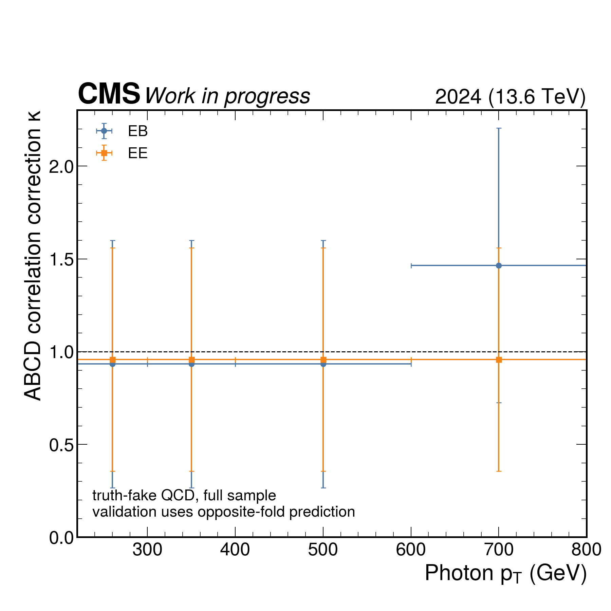
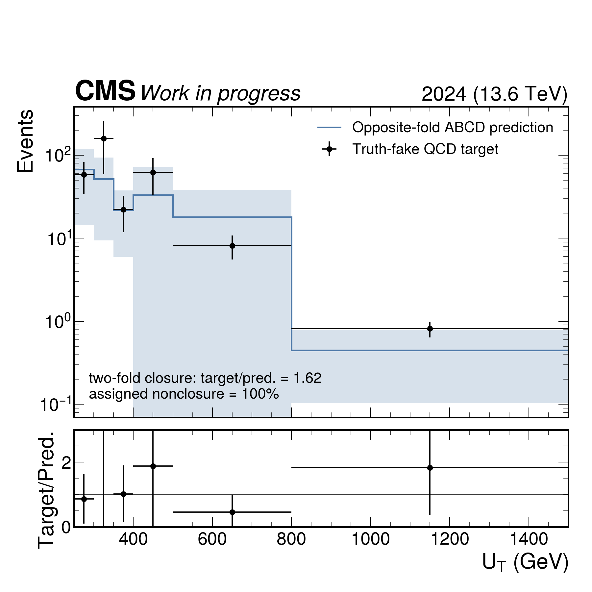
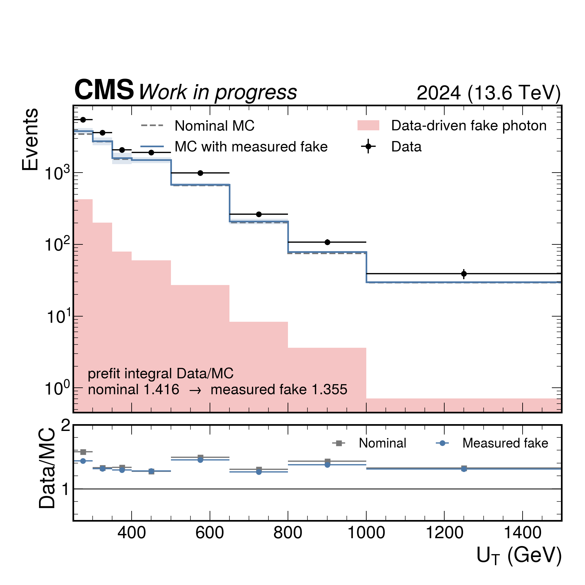

Photon fake v3: cross-validated correlation-corrected ABCD
Complete medium-pass/fail sidecar campaign; nominal intermediates were read only.
- Predicted fake yield:
807.552
- Two-fold QCD closure target/prediction:
1.618
- Assigned closure uncertainty:
100%
- Prefit GCR UT integral Data/MC:
1.416 → 1.355
kappa_vs_photon_pt
PDF

qcd_twofold_closure_ut
PDF

gcr_ut_prefit_fake_replacement
PDF
